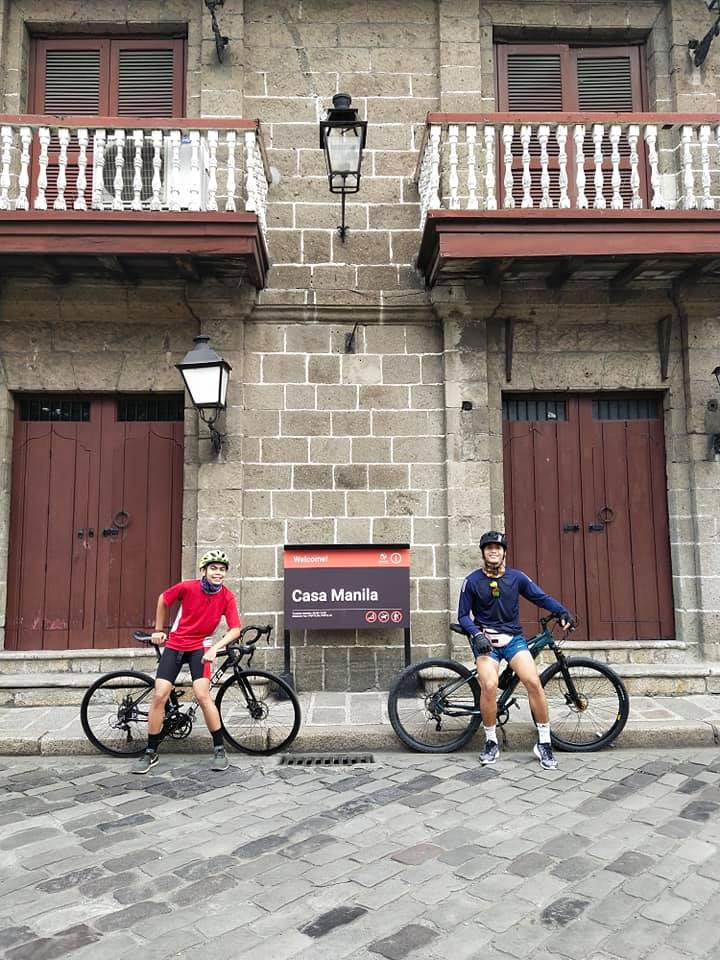
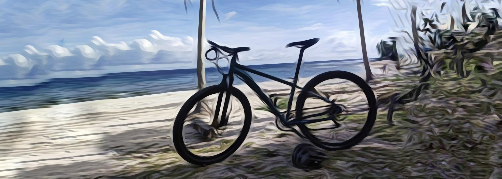
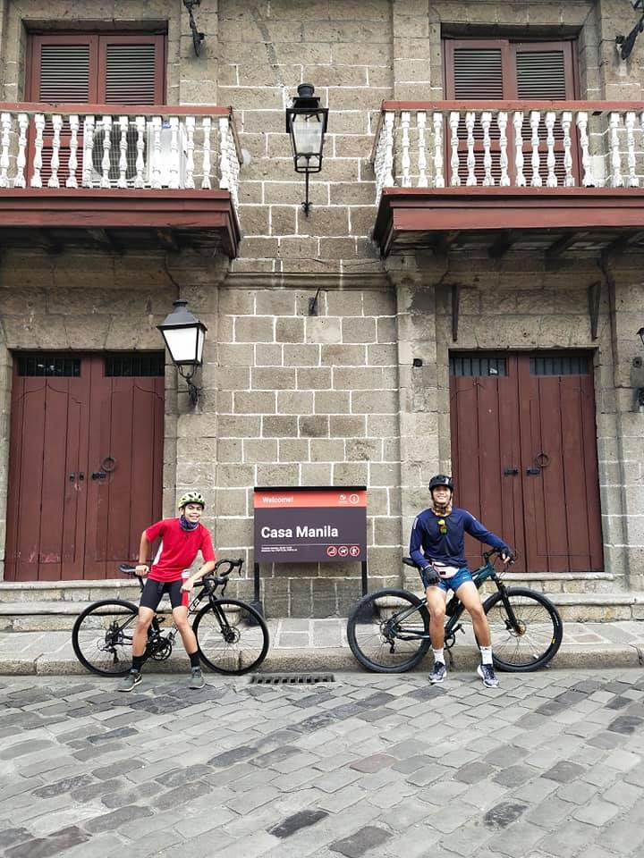
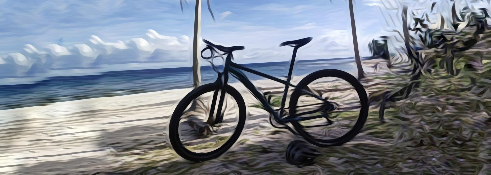

Allain Pernito.
FEU Institute of Technology Student.
About Me.
Allain Marvic Pernito
The pursuit of excellence in both programming and basketball is a testament to my unwavering determination and commitment to personal growth. In the realm of coding, I am constantly pushing the boundaries of my abilities, striving to write elegant and efficient code that solves complex problems. Similarly, on the basketball court, I pour my heart and soul into every practice and game, aiming to hone my skills and contribute to my team's success. Being a try-hard in these fields means more than just working hard; it means embracing challenges as opportunities for growth. It means fostering a growth mindset, viewing setbacks as stepping stones to improvement, and never shying away from the effort required to excel. This mindset has become ingrained in my approach to both programming and basketball, shaping my character and fortifying my determination.
One of my key assets is my adept time management skills, allowing me to strike a harmonious balance between these consuming passions. Whether I'm deep in code or engaged in an intense game, I am proficient at allocating my time effectively, ensuring that I give my best to both pursuits. Moreover, my unwavering attention to detail and competitive spirit drive me relentlessly towards precision and excellence. In coding, I leave no stone unturned when debugging or optimizing, and in basketball, I scrutinize every aspect of my performance to refine my skills. This dedication to precision permeates every facet of my life. Perhaps one of the most fulfilling aspects of my multifaceted skills is the unique opportunities they present. My journey serves as an inspiration to others, demonstrating that with unwavering determination, it is possible to excel in diverse and seemingly unrelated fields. It illustrates the remarkable capacity of the human spirit to persevere, adapt, and thrive across a spectrum of pursuits.
In the delicate balance between coding and playing basketball, I embody the incredible potential of the human spirit. By relentlessly pursuing excellence in both areas, I hope to inspire others to embrace their passions, cultivate resilience, and reach their own goals. My journey underscores the infinite possibilities that emerge when one refuses to settle for mediocrity and instead strives for the extraordinary.
My Skills
Programming
Basketball
My Photos
BASKETBALL
CYCLING
 



Contact Me
Sampaloc, Manila
Phone: 09426538930
Email: marvicpernito@gmail.com
Let's get in touch. Send me a message: